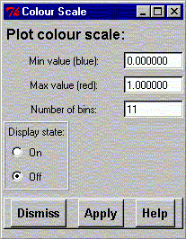

**************************************************************************
Plot colour scale widget
Leif Laaksonen CSC 1997
**************************************************************************
It is possible to include into pictures, using colours to to display a range of values, a colour scale.
If a molecular dynamics trajector is defined it is possible to plot the Root Mean Square Deviation (RMSD) of a selected set of atoms as ellipsoids. The plot is always in the global x, y, z coordinate system.
Please supply the min and max values and the number of values (bins) for the scale. The scale can be toggled between the on (display) and off (do not display) states.

Line command: see plot command
**************************************************************************
LUL/1997
**************************************************************************